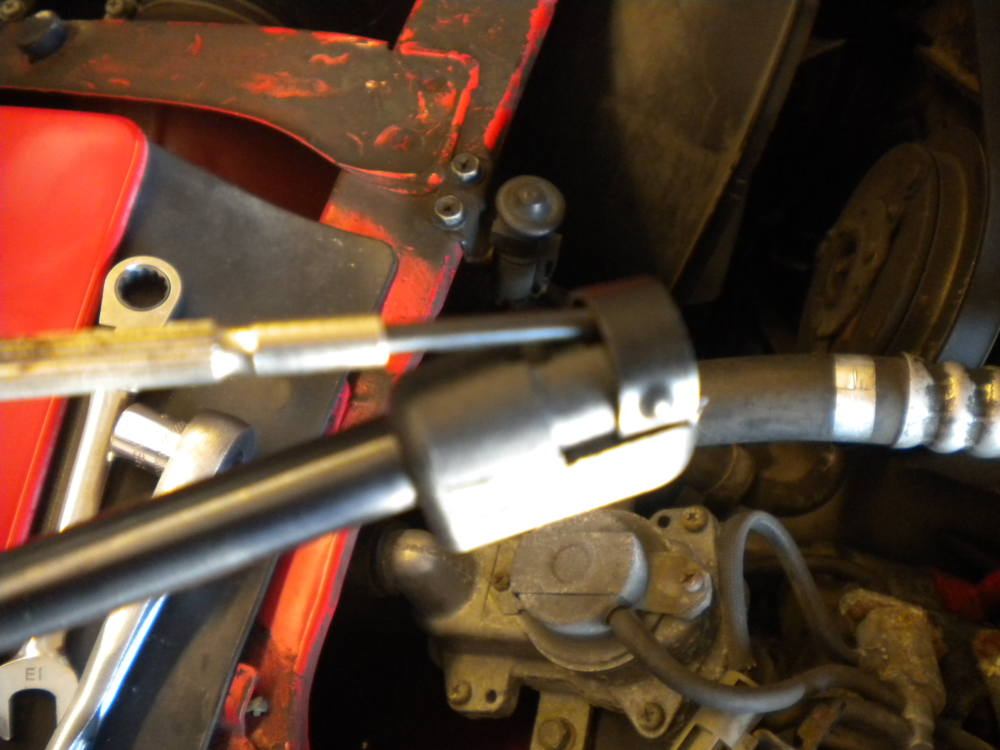

-
Switching over to a push-ball struts will allow you to use universal struts and toss the stick you have been using to hold your hood up.
This write-up applies to all 84-89 Z's. There is a difference between the early and late upper brackets. Early style uses a single bolt and the later style uses two bolts. The installation is the same for both.
Top is late style, bottom is early style:
Tools/parts needed: basic hand tools, drill & bits (grinder or cut-off wheel are nice, but a file and hacksaw work too). Locktite, two nuts, two universal struts with ball studs included like: Boxi 4683 Amazon: http://a.co/2N760GL or Monroe 901329 Amazon: http://a.co/1WWTogO If you get struts without ball studs you will have to source them.
Upper Mod and Install
1. Prop hood with the stick of your choice, remove original strut 1 bolt for early style, 2 bolts for later, off hood (top) and 1 phillips "screw" in apron (bottom)
2. Drill the rivet out of the upper bracket and enlarge the hole so new ball stud will fit through. Not specifying a hole size, since ball studs may vary.
3. Use the supplied washer and source a thin enough nut that will not contact hood when installed. I used locktite red on stud threads since there wasn't space to use a lock washer.
To cut or to bend, that is the question You can cut the excess threads off the ball stud or you can bend the bracket out slightly so it clears. I've done it both ways and prefer the cut method.
Thread cut method
4. Cut excess threads off.
5. Paint to keep it from rusting.
Bend bracket method (if you don't have a way to cut threads & paint but have a hammer)
4. Disassemble.
5. Bend the bracket slightly so the stud will clear the hood & reassemble.
Bolt bracket up
6. Bolt bracket up using factory bolts, 1 for early style, 2 for late.
Cut off style. Use tape to keep from marring up paint (well, to try)
Pretend the strut isn't installed and the bracket is painted and pretty. I didn't take a pic with just the bracket, so this is one from the test fitting before paint.
Bent style (cut off style looks better, but you don't really notice it unless you have them side by side)
Lower Mod and Install
1. The ball stud screws right into the apron where the "screw" was. I reused the stock lock washer, used the supplied flat washer, and loctite red because I won't be taking this back apart.
Last edited by Dunkine; 01-06-2018, 11:04 AM. -
Strut Installation
Note: depending on the strut tube size and if you bent the bracket instead of cutting threads, you may have to flip the struts over for fender clearance. I did this with the Monroe 901329 on my 87. The Boxi 4683 tubes were thinner and I cut the threads instead of bending, so I didn't need to flip them on my 89, but I did anyway so they look the same for both Z's and I preferred the tubes down aesthetically.
1. Install strut onto ball studs. On the Monroe 901329 I pried the little clips prior to pushing them over the ball stud. The Boxi 4683 pushed right on. 
Notes on Struts I used
I haven't been using either for very long, Boxi 4683 for 8 months and Monroe 901329 for 16 months, but both seem to be plenty strong enough to hold our Z hoods up and I haven't had any issues with either. I will update if I do. The tubes for the Boxi are a little thinner than the Monroe, so that is good for clearance. The Boxi have screw off top pieces which I have never seen before. They may have done this so they could use the same struts for multiple applications by simply including the correct head.
Last edited by Dunkine; 01-06-2018, 11:10 AM. -
I started to do this on mine, but had to get the 2 nuts that will screw onto the ball studa. I was looking at my car wondering why you would need to cut the ball stud threads to clear the hood. it just hit me after looking at your pics. Whoever replaced the hood struts the last time flipped the hood brackets upside down so the bolts holding the current struts clear the hood.
Is there any disadvantage to doing it this way? I'll probably cut the ball stud threads like you did because I want everything to be as close to factory as possible. These cars seem to have the "hood flying up while driving" issues…-
 #3.1Dunkine commentedSounds like a creative way to get around not having a way to shorten the ball stud for the 2 bolt Z's. If nothing is hitting and the strut can compress all the way, I don't see any disadvantage. The 2 bolt bracket seems pretty hefty.
#3.1Dunkine commentedSounds like a creative way to get around not having a way to shorten the ball stud for the 2 bolt Z's. If nothing is hitting and the strut can compress all the way, I don't see any disadvantage. The 2 bolt bracket seems pretty hefty.
Might be an issue for the 1 bolt bracket if there is some sort of locating ridge that keeps it from moving.
-
-

Copyright © 2006–. All rights reserved. Privacy Policy
Comment